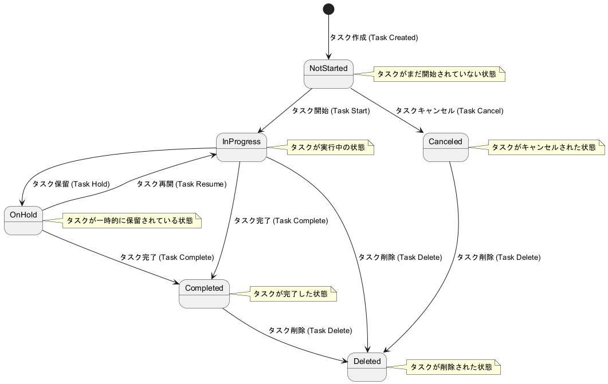

3. 状態遷移図と状態説明
3.1 状態遷移図
ユーザーの操作に応じた状態遷移図を提供します。

3.2 状態説明
各状態の詳細な説明を提供します。
状態遷移図に基づいて、各状態の詳細を以下に説明します：
-
初期状態: アプリケーションが初期化された状態。
-
ログイン状態: ユーザーがログインしている状態。
-
タスク表示状態: ユーザーがタスクを表示している状態。
-
タスク編集状態: ユーザーがタスクを編集している状態。
-
タスク完了状態: ユーザーがタスクを完了させた状態。
-
ログアウト状態: ユーザーがログアウトしている状態。